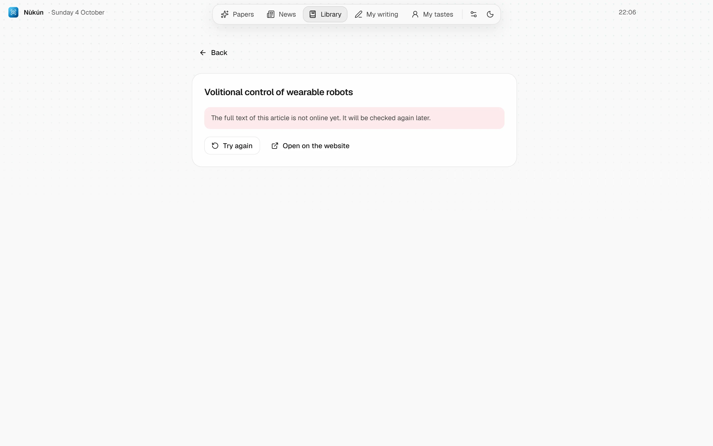

Help
What is not obvious at first sight: where each setting lives, what the messages mean, and what to do when a paper won't open.
Install
- Download Nukun-Setup.exe from the releases page.
- Run it. If Windows says “Windows protected your PC”, click More info then Run anyway. The app is not signed with a paid certificate; that is the only reason for this warning.
- The installer asks where to install the app and whether to create a desktop icon. It always appears in the Start menu.
You need Windows 10 or 11, 64-bit, 4 GB of memory and about 1 GB of free space.
First launch
First choose the app's language, English or French. It is also the language papers are translated and explained in. Then choose your interests: from the catalogue, or by typing any subject in the search.
A short tour then walks you through the settings. You can see it again later from Settings, Tour section.
The first feed takes a few minutes
The app queries every source, then downloads, once, a 130 MB model used to understand what papers mean. If the connection drops, the download resumes where it stopped. In Mobile data mode, this model is not downloaded and recommendations rely on words only.
The Google key, for translating
Translations and explanations go through Gemini, Google's AI. Its free quota is enough for daily use, but you need your own key.
- Open aistudio.google.com/apikey and sign in with your Google account.
- Click Create API key and copy the key.
- In Nùkún, open Settings, Artificial intelligence section, and paste it into the Gemini key field.
No credit card is required. The key stays on your PC.
The other AI modes
In the same section, you choose who does the work:
- Gemini only: free with your key. The local AI takes over if the daily quota is reached.
- Local AI only: free and offline with Ollama, on your graphics card. Slower, less accurate.
- My Claude subscription: goes through Claude Code if it is installed and signed in on this PC.
- Hybrid: Gemini translates most of the text, Claude takes the most technical passages.
Where to change what
| I want to | Where |
|---|---|
| Switch the app to French | Settings, Language section. Translations already made in the other language stay in memory. |
| Add or remove an interest | Settings, Interests section, or the Edit button at the top of the feed. |
| See what the app has learned about me | The My tastes page, in the left bar. |
| Start again from scratch | My tastes, Reset button. Your saved papers and notes are kept. |
| Change AI or paste my key | Settings, Artificial intelligence section. |
| Use less data | Settings, Save data section. Papers are only downloaded when you open them; cards stay without an image until then. |
| Turn a source on or off | Settings, Science sources section. |
| Change how often the feed refreshes | Settings, Science sources section, Refresh every… hours. |
| Switch to the dark theme | The moon icon at the bottom of the left bar. |
| Make a paper's text larger | The smaller A and larger A buttons, at the top of the reader. |
| Read the original or both languages | At the top of the reader: Translation, Original or Side by side. |
| Choose where my texts are exported | Settings, Export section. |
| See the tour again | Settings, Tour section. |
Messages, and what to do
A paper won't open

The AI does not answer
A source does not answer
Handy gestures
- Esc closes what is open and goes back to the previous screen.
- Select a passage in a paper: Explain explains it simply, Note adds it to your reading notes.
- On a figure, Explain this figure describes what it shows.
- On a card, the crossed-out eye means “not interested”: the algorithm will show you less like this. The bookmark saves the paper to your library.
- Translate everything translates the whole paper at once, to read later. Otherwise only what is on screen is translated.
- Write my article opens the editor with your notes beside it. From the editor, Read the article again takes you back to the original paper.
- In the library, the bin removes a paper. You are asked to confirm.
Updates
When a new version exists, a window appears at the bottom of the screen with an Update button. Nothing downloads or installs without your click. Your papers, notes and settings are kept, and you never need to reinstall.
Your data
Everything the app keeps is on your PC, in %APPDATA%\Nukun: reading profile, library, translations, notes and settings. None of it is sent anywhere. Only the passages to translate or explain go to the AI you chose.
To uninstall, go through Windows Settings, then Apps. To erase your data too, then delete the folder above.
A problem not covered here? Open an issue on GitHub.